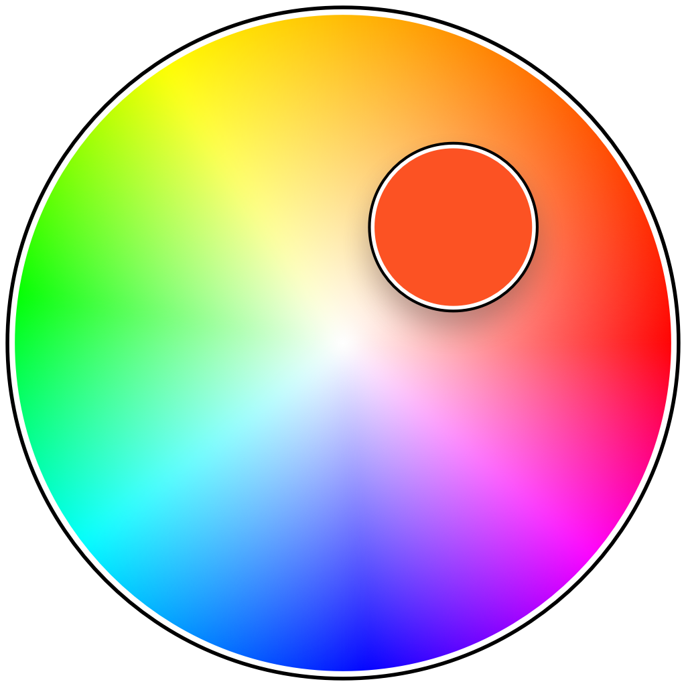
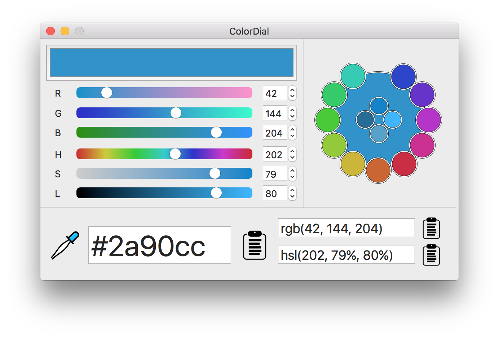
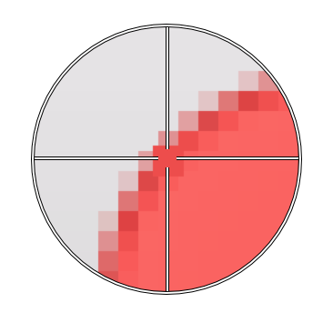
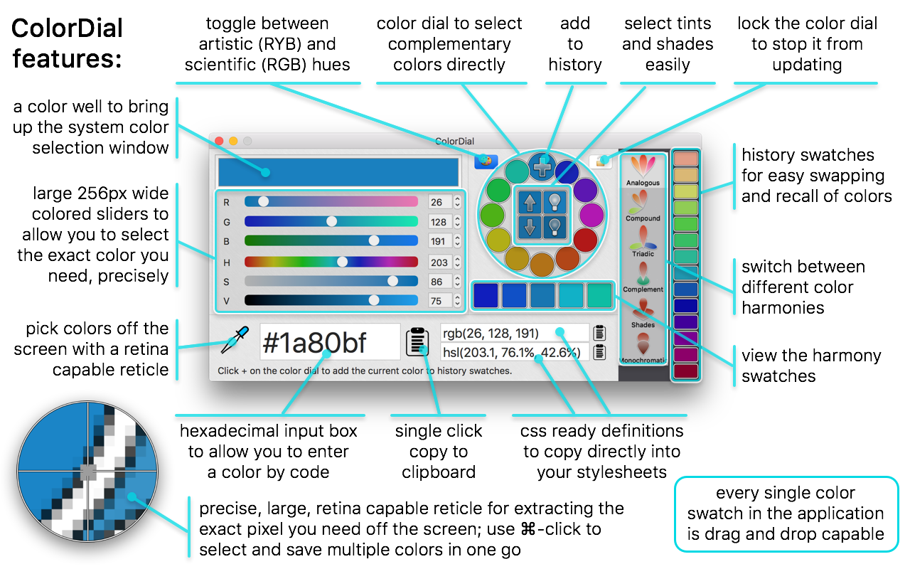
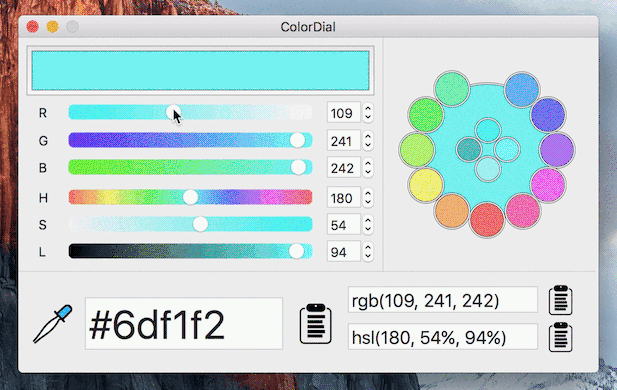

 ColorDial

Introducing the last color picker you'll need.
A rich and powerful, open-source color wheel/picker for OS X.
Featuring large and precise 256px wide colored sliders for accurate drilling down until you find that perfect specimen, text entry boxes for entering direct coordinates in multiple formats, css ready definitions to copy and paste, a handy color wheel to rapidly select complementary colors for your scheme, and a retina scale, sub-pixel capable reticle for sniping that elusive RGB value right off your monitor.
Reticle sampling

The sampling tool built into ColorDial comes with a large format reticle which is precisely linearly scaled (crisp edges, no blur) and sub-pixel capable, able to reach every pixel on your screen, even if you're sporting a retina display with pixels between your pixels. We've got you covered.
When you sample a color, it gets automatically added to your history and you can hold down the ⌘ (command) key while clicking to sample multiple colors at once. Press escape to cancel.
Features
Here's a visual introduction to the ColorDial interface features to get you started:

Demo animation
This demo animation is of an older version of ColorDial which doesn't have as many of the new features, but it gives an idea of the usage:

How to get this marvelous software?
Download one we prepared earlier
Binary releases avaliable on the releases page
Keen for some customization?
Always wanted to dabble with coding some OS X Swift?
This is the perfect test case, with lots of pure Swift 2 UI code, featuring Storyboard, XIB, and a bunch of lower-level CG code, there's still plenty of stuff to customize and improve, so what are you waiting for?
Clone the repo, load it up in the latest XCode and run. There's no other dependancies needed, so it should just compile and go right off the bat. Easy peasy.
If you make any improvements, we'd love for you to open a pull request, or if you have suggestions or bugs, create an issue.
License
Copyright 2015 Norganna's AddOns Pty Ltd, released under the GNU Affero GPL v3.0.